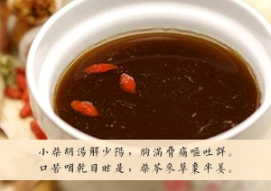
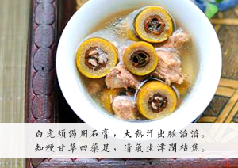
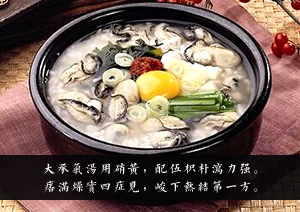
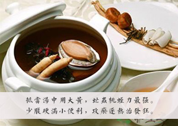
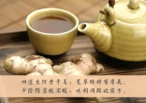
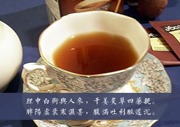

-
桂枝汤
桂枝汤，为解表剂，具有辛温解表，解肌发表，调和营卫之功效。主治头痛发热，汗出恶风，鼻鸣干呕苔白不渴，脉浮缓或浮弱者。临床常用于治疗感冒、流行性感冒、原因不明的低热、产后或病后低热、妊娠呕吐、多形红斑、冻疮、荨麻疹等属于营卫不和者。

-
麻黄汤
麻黄汤，为解表剂，具有发汗解表，宣肺平喘之功效。主治外感风寒表实证。恶寒发热，头身疼痛，无汗而喘，舌苔薄白，脉浮紧。临床常用于治疗感冒、流行性感冒、急性支气管炎、支气管哮喘等属风寒表实证者。

-
葛根汤
葛根汤，为发表剂，具有发汗解肌，升津舒筋之功效。主治阳明经病，目痛，鼻干，唇焦，漱水不欲咽，脉长。现常用于感冒、流行性感冒、麻疹、痢疾以及关节痛等病证见上述症状者。

-
小柴胡汤
小柴胡汤，为和解剂，具有和解少阳之功效。主治伤寒少阳病证。邪在半表半里，症见往来寒热，胸胁苦满，默默不欲饮食，心烦喜呕，口苦，咽干，目眩，舌苔薄白，脉弦者；妇人伤寒，热入血室，经水适断，寒热发作有时；疟疾，黄疸等内伤杂病而见以上少阳病证者。临床常用于治疗感冒、流行性感冒、疟疾、慢性肝炎、肝硬化、急慢性胆囊炎、胆结石、急性胰腺炎、胸膜炎、中耳炎等属胆胃不和者。
 -
白虎汤
白虎汤，为清热剂，具有清气分热，清热生津之功效。主治气分热盛证，壮热面赤，烦渴引饮，汗出恶热，脉洪大有力。临床常用于治疗感染性疾病，如大叶性肺炎、流行性乙型脑炎、流行性出血热、牙龈炎、以及小儿夏季热、牙龈炎等属气分热盛者。
 -
承气汤
承气汤，为泻下剂，寒下，具有峻下热结之功效，主治阳明腑实证，大便不通，频转矢气，脘腹痞满，腹痛拒按，按之则硬，甚或潮热谵语，手足濈然汗出，舌苔黄燥起刺，或焦黑燥裂，脉沉实；热结旁流证，下利清谷，色纯青，其气臭秽，脐腹疼痛，按之坚硬有块，口舌干燥，脉滑实；里热实证之热厥、痉病或发狂等。本方临床常用于治疗急性单纯性肠梗阻、急性胆囊炎、呼吸窘迫综合症、挤压综合征、急性阑尾炎等。
 -
小陷胸汤
小陷胸汤，为祛痰剂，具有清热化痰，宽胸散结之功效。主治痰热互结之结胸证。胸脘痞闷，按之则痛，或心胸闷痛，或咳痰黄稠，舌红苔黄腻，脉滑数。临床常用于治疗急性胃炎、胆囊炎、肝炎、冠心病、肺心病、急性支气管炎、胸膜炎、胸膜粘连等属痰热互结心下或胸膈者。

-
抵当汤
抵当汤，具有破血祛瘀之功效。主下焦蓄血所致的发狂或如狂，少腹硬满，小便自利，喜忘，大便色黑易解，脉沉结，及妇女经闭，少腹硬满拒按者。
 -
四逆汤
四逆汤，中成药名。为温里剂，具有温中祛寒，回阳救逆之功效。用于阳虚欲脱，冷汗自出，四肢厥逆，下利清谷，脉微欲绝。
 -
理中汤
理中汤为中药制剂，具有治疗脾胃虚寒证，自利不渴，呕吐腹痛，腹满不食及中寒霍乱，阳虚失血，如吐血、便血或崩漏，胸痞虚证，胸痛彻背，倦怠少气，四肢不温。现用于急、慢性胃炎，胃窦炎、溃疡病、胃下垂、慢性肝炎等属脾胃虚寒者。
